Stakeholder Analysis
As an innovative whole-cell biosensor system targeting PAHs, NapRemSen's success depends not only on technical feasibility, but also on public understanding, industrial recognition and regulatory acceptance. Guided by the Responsible Research and Innovation (RRI) framework, we engaged five key stakeholder groups between January and August 2026 to translate their concerns into concrete project iterations.
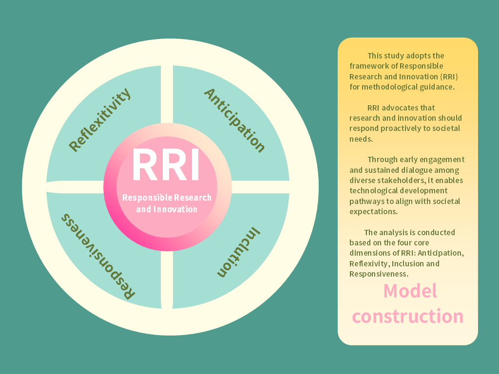
Framework & Methodology
"One who lifts alone finds it hard to rise; many who walk together find it easy to go far. A collapsing building cannot be propped up by a single beam, nor can a bursting river be blocked by a handful of soil."
— Wei Yuan, Mo Gu · Governance Chapter Eight, Qing DynastyAs an innovative whole-cell biosensor system targeting polycyclic aromatic hydrocarbons (PAHs), NapRemSen's success depends not only on technical feasibility at the laboratory level, but also on public understanding, industrial recognition, and regulatory acceptance. This study adopts the Responsible Research and Innovation (RRI) framework as its methodological guide. RRI emphasizes that research and innovation processes must remain responsive to societal needs, aligning technological development pathways with societal expectations through early engagement and sustained dialogue with multiple stakeholders.
Grounded in RRI's four core dimensions — Anticipation, Reflexivity, Inclusion, and Responsiveness — we identified five key stakeholder groups: the general public concerned with biosafety; frontline volunteers actively engaged in routine environmental protection activities; water remediation enterprises with industrial-scale operational experience and governance responsibilities; governmental regulatory authorities establishing supervisory frameworks; and academic and engineering experts driving technological innovation.
Between January and August 2026, we collected diverse perspectives through questionnaire surveys, on-site visits, and in-depth semi-structured interviews. The RRI framework guided us not only to document stakeholder viewpoints, but also to conduct systematic analysis of the structural gaps within the socio-technical system revealed by their feedback, translating concerns and recommendations into actionable project iterations. This process bridges the gap between laboratory research and real-world societal needs, supporting the sustainable translation of NapRemSen technology toward real-world scenarios.
Product Positioning Iteration
NapRemSen's product positioning underwent three critical adjustments through stakeholder dialogue.
Our initial positioning was an integrated in-situ detection and degradation tool, aiming to simultaneously complete PAHs screening and in-situ remediation at contamination sites. Regulators at the Huangpi District Bureau of Ecology and Environment pointed out that whole-cell biosensor data lacks legal evidentiary weight, and environmental release of live bacteria requires stringent approval — making this scenario difficult to realize under the current regulatory framework.
We reoriented the product as a preliminary screening tool for precise quantitative analysis, as a front-end supplement to laboratory GC-MS methods. Dr. Jianjun Han noted that fluorescence readings are subject to multiple interfering factors — strain activity, culture medium conditions, environmental matrices — so their quantitative precision cannot meet legally required accuracy standards.
Our tertiary positioning established the product as a qualitative assessment tool for evaluating remediation effectiveness, covering two directions: pre-remediation screening of high-risk areas, and post-remediation validation. The output is an intuitive high/low contamination judgment based on preset fluorescence thresholds, requiring no interpretation of raw readings.
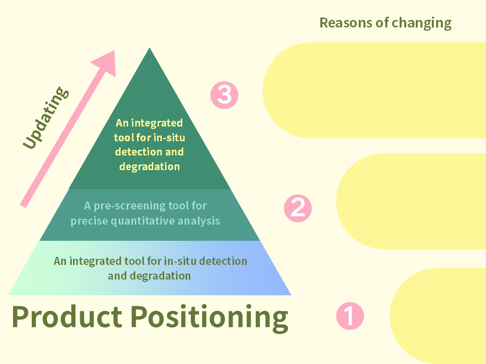
Stakeholder Perspectives
1. Perspective from the General Public
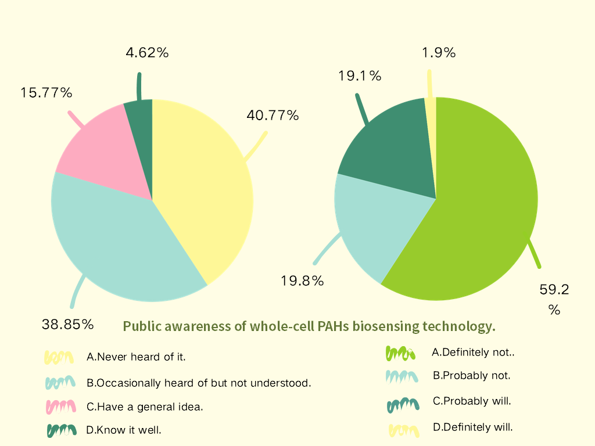
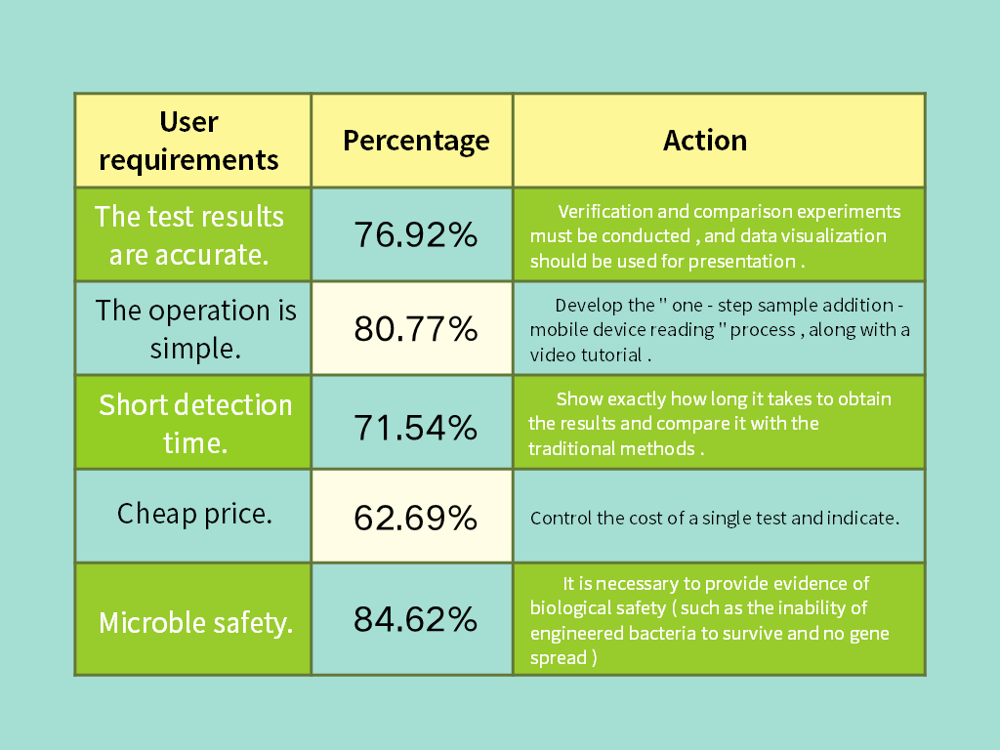
Analysis: Current Situation
We collected 394 valid questionnaire responses. Among respondents, 99.24% were under 25 years of age, and 98.85% were students. Survey data revealed that 81.16% of respondents expressed willingness to actively use a portable detection tool, yet 79.61% of respondents had little to no understanding of PAHs. While the public demonstrated high approval of microbial-based pollution remediation concepts, their knowledge of synthetic biology technical details remained limited. Notably, 53.46% of respondents mistakenly believed that natural plastic degradation produces PAHs, reflecting a prevalent scientific misconception.
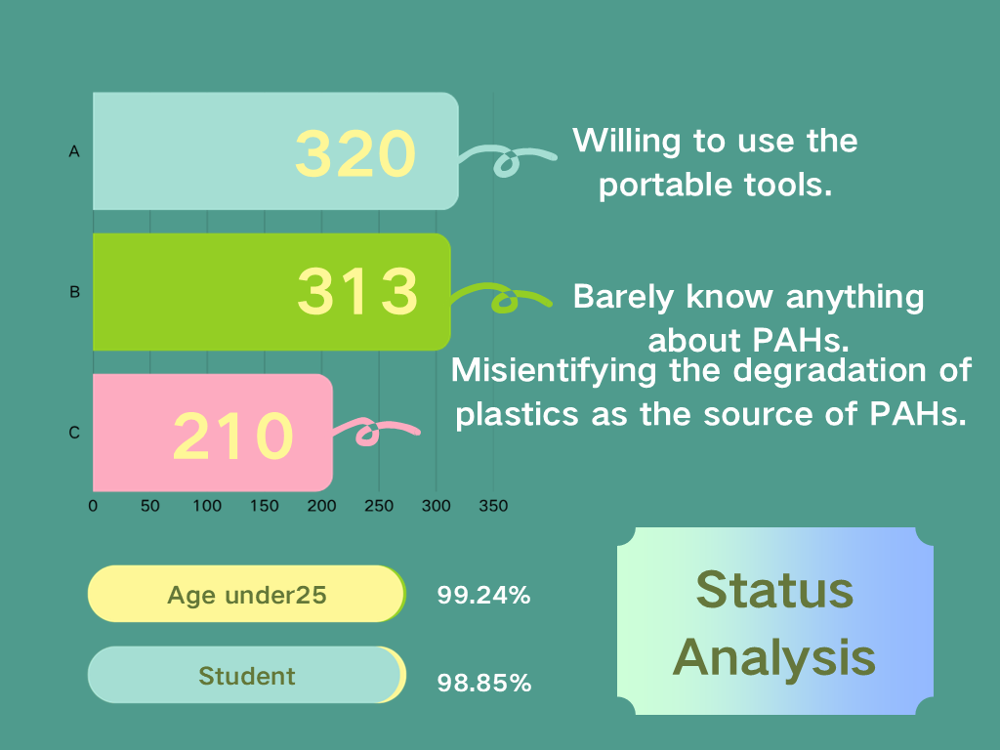
The public holds a supportive yet cautious attitude toward whole-cell biosensor technology. Core concerns center on the ecological risks of genetically engineered bacteria, the reliability of the autolysis biosafety module, and the potential for escaped engineered strains to disrupt native microbial communities and trigger unforeseen ecological cascading effects. The survey also indicated that public acceptance increased significantly after respondents were introduced to the density-dependent autolysis suicide circuit.
Reflection and Project Insights
InclusionThe Inclusion dimension of the RRI framework requires that technological innovation not be decoupled from its social context. Laboratory performance advantages alone, without social acceptance, cannot realize practical value. Public feedback elevated biosafety from an auxiliary module to a project-priority prerequisite, establishing "safety first" as a core principle. The partial nature of public understanding also highlights the need for tiered science communication targeting synthetic biology environmental applications.
Action Plan
- Technical level: Optimize the autolysis genetic circuit; conduct environmental risk assessment experiments simulating complex real-world water and soil matrices to validate the controlled capability of engineered strains.
- Communication level: Operate WeChat, Xiaohongshu, and Instagram accounts to produce differentiated science communication content for adolescents, high schoolers, and general adults, alongside offline science lectures in secondary schools. The 53.46% misconception rate identified in the survey serves as a precise entry point, extending the theme from naphthalene to the broader category of PAHs.
2. Perspective from Frontline Environmental Practitioners
Analysis: Current Situation
The team conducted an in-depth interview with Ms. Wu Xianglian, director of the Chenzhou River Youth Action Center. Her volunteer team has accumulated over 8,000 kilometers of river patrol experience. Frontline practice revealed a critical pain point: volunteers can conduct on-site routine water quality tests for pH, heavy metals, residual chlorine, and COD, but PAHs — as organic pollutants — can only be analyzed in professional laboratories. Upon detecting water quality anomalies, volunteers can only report to environmental authorities and await official sampling and testing, a process that takes days to weeks.
Ms. Wu shared two real-world contamination cases. The Yanquan River experienced severe water discoloration and pollution in 2024, with local government completing remediation between March and September 2025. An Anren black-odorous water body identified through satellite positioning required excavators and manual labor, taking two days and one night to complete remediation.
When the team demonstrated the biosensor prototype to Ms. Wu, she expressed clear willingness to use it. She identified two primary application scenarios: on-site water quality screening during river patrols and community science outreach demonstrations. She also conveyed the core concern of local residents: engineered bacteria might mutate and eventually enter the food chain through groundwater or agricultural crops, ultimately endangering human health.
Reflection and Project Insights
Anticipation ResponsivenessThe Anticipation dimension of the RRI framework requires technology developers to proactively identify potential societal concerns and ethical issues. Frontline patrol volunteers lack rapid screening tools for invisible organic pollutants — device miniaturization and visual output are mandatory requirements for field deployment, not optional enhancements. The Responsiveness dimension requires us to actively incorporate public concerns into technological design: biosafety communication must be prioritized, transparently demonstrating our biological containment design to alleviate concerns about environmental release and gene transfer. Volunteers do not require precise quantitative data; they need to quickly determine whether a water body poses PAHs contamination risk to decide whether escalation is necessary.
Action Plan
- Technical level: Develop an integrated outdoor portable kit requiring no large-scale laboratory instrumentation, with fluorescence signals distinguishable by the naked eye.
- Cooperation level: Establish a pilot cooperation with the Chenzhou River Youth Action Center, planning field water sample testing demonstrations at the Yanquan River.
- Outreach level: Develop science communication teaching materials and provide them free of charge to volunteers for environmental education presentations in schools and communities.
3. Perspective from Water Remediation Enterprises
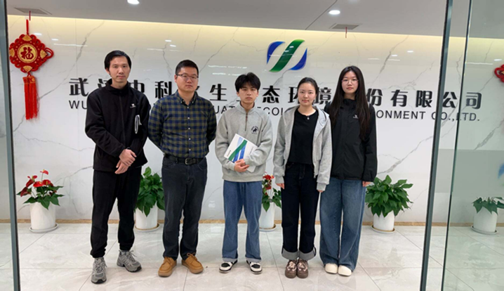
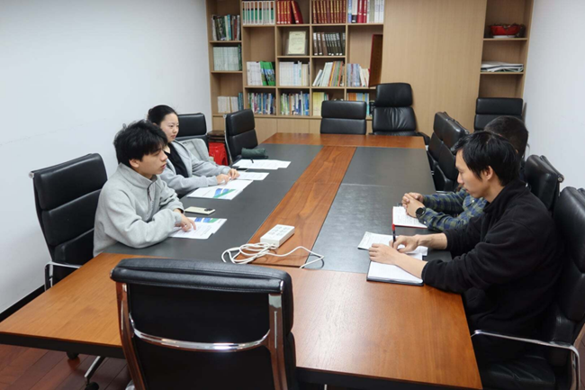
Analysis: Current Situation
The team conducted an on-site interview with Zhongke Aquatic Environmental Technology Co., Ltd., an enterprise specializing in water pollution remediation projects. Their feedback revealed multiple industry pain points.
Detection blind spots: current remediation assessment indicators primarily cover total nitrogen, total phosphorus, ammonia nitrogen, COD, and TOC. PAHs are not mandatory testing items. The enterprise encountered a case where vegetation failed to grow normally during a project, suggesting the presence of toxic substances beyond standard assessment indicators — most likely persistent organic pollutants.
Cost and timeline: obtaining accurate contaminant concentration data requires third-party laboratory testing, with a minimum cost of approximately 150 RMB per single indicator. Pre-remediation site assessment is costly and time-consuming. The enterprise expressed strong demand for a portable kit supporting multi-sample parallel testing, expecting on-site preliminary reference data to assist in estimating vegetation planting density and remediation budgets.
Microbial remediation obstacles: introducing exogenous remediation strains requires domestication at high cost, and survival rates decline sharply in natural field environments. Domestic policies specifically addressing biosafety evaluation for persistent organic pollutant remediation remain absent, limiting real-world application scenarios.
Reflection and Project Insights
ResponsivenessThe Responsiveness dimension of the RRI framework requires adjusting technological development pathways in response to stakeholder feedback. This enterprise interview drove us to adopt a demand-driven innovation logic. In the early project stage, we focused on biological innovation without adequately addressing the industry's core question: why should the industry adopt our technology? Industry partners require quantitative evidence demonstrating advantages over existing solutions in real-world scenarios — not merely laboratory-scale scientific breakthroughs. Precise application scenario positioning is equally essential: our technology is better suited for advanced treatment of characteristic pollutants in high-difficulty industrial wastewater and ecological remediation demonstration projects, rather than direct competition with already-mature municipal wastewater treatment processes.
Action Plan
- Application scenario focusing: target high-difficulty industrial wastewater niche segments, including characteristic pollutant treatment in electroplating and chemical industries.
- Technical validation: conduct comparative experiments between engineered strain solutions and conventional remediation approaches, quantifying indicators including cell adhesion stability, treatment efficiency, and comprehensive costs.
- Policy research: investigate existing biosafety regulations for persistent organic pollutant remediation and explore compliance pathways for project implementation.
4. Perspective from Governmental Regulatory Authorities
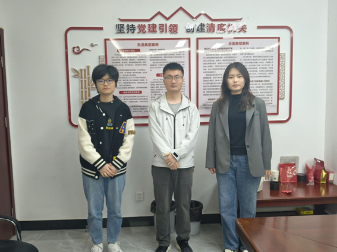
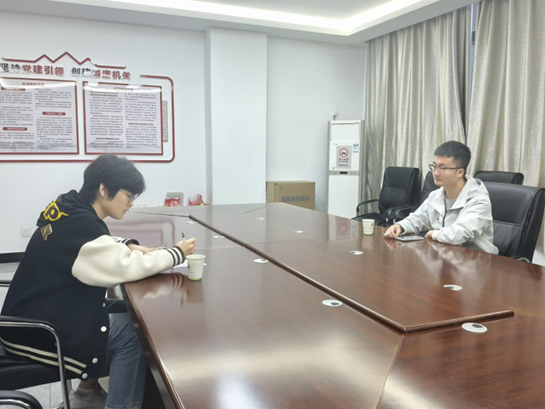
Analysis: Current Situation
The team conducted an interview with Li Qiqi, staff member at the Huangpi District Bureau of Ecology and Environment, Wuhan. Regulatory authorities serve as gatekeepers for environmental release of genetically engineered microorganisms, prioritizing biosafety controllability above technological novelty. Water environment assessment policies are shifting from single chemical indicator compliance toward comprehensive aquatic ecosystem health evaluation. Traditional chemical monitoring indicators cannot adequately address non-point source pollution events such as stormwater overflow.
Domestic approval procedures for environmental release of genetically engineered microorganisms are stringent. Laboratory-scale safety verification is insufficient to eliminate regulatory concerns over long-term ecological impacts following environmental release.
Reflection and Project Insights
ReflexivityThe Reflexivity dimension of the RRI framework requires researchers to examine the assumptions, established practices, and potential limitations of technological development. Regulatory feedback requires the team to closely track evolving trends in water environment assessment policy. While the autolysis suicide circuit meets the baseline biosafety requirement, empirical evidence under complex environmental conditions is still needed. In the secondary iteration of product positioning, our decision to abandon precise quantitative analysis directly responds to regulatory logic — regulatory agencies do not need another device generating data; they need a screening tool capable of assisting pollution risk judgment.
Action Plan
- Compliance pathway: align the high/low contamination qualitative assessment approach confirmed in the tertiary product positioning with the existing environmental monitoring method certification system, clarifying the linkage pathway between qualitative screening tools and standard methods. When detection data lacks legal evidentiary weight, the functional boundary is auxiliary risk pre-screening in regulatory decision-making.
- Experimental design: conduct fluorescence threshold validation experiments using real water samples, aiming to determine the optimal fluorescence threshold range for high/low contamination judgment. Collect multiple sets of real water samples with known contamination levels (verified by GC-MS) to establish the correspondence between fluorescence signals and contamination grades.
- Assessment protocol: following national standard sample testing specifications, evaluate the degree of fluorescence response shift under different matrix conditions using the standard addition method, forming technical documentation of confidence intervals for qualitative judgment.
5. Guidance from Academic and Engineering Experts
Click on each expert to expand their interview details.
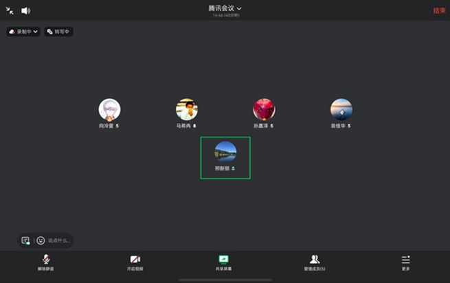
Event Description
The team conducted an interview with Professor Xing on project background investigation and field sampling strategies. Professor Xing provided methodological guidance on pollutant environmental behavior and on-site detection technologies.
Professor Xing noted that pollutant migration behavior is governed by physicochemical parameters including KOW, KOA, and Henry's constant. Naphthalene is highly volatile and migrates primarily through atmospheric transport, while high-ring PAHs tend to adsorb onto soil particles. Field sampling point design must differentiate land use types, seasonal temperature, and soil organic matter content. For naphthalene, additional atmospheric deposition sampling points are required.
In composite contamination sites where heavy metals and microplastics coexist, detection interference occurs. Blank controls and single-variable experiments are needed to quantify interference effects. Commercial PID rapid detection devices can only reflect total volatile organic compounds and cannot distinguish individual PAH monomers. On-site screening devices and laboratory GC-MS instruments are complementary and cannot substitute for one another.
Current environmental assessment standards lag behind emerging pollutant risks. In the absence of national standards, toxicological tests, regional background values, and international criteria can be referenced for risk evaluation. Traditional pollution source fingerprinting is limited by environmental transformation; isotope tracing requires high sample concentrations, limiting large-scale field application. Lake sediment stratification can support long-term remediation effectiveness assessment.
Implications for Our Project
Professor Xing's assessment that on-site rapid detection devices and laboratory gold-standard methods cannot substitute for one another provides a theoretical basis for abandoning the precise quantitative analysis positioning, confirming the sound direction of pre-screening and risk triage.
The guidance that naphthalene migrates primarily through atmospheric transport indicates the need to incorporate atmospheric deposition into sampling design, rather than focusing solely on water and soil. The recommendation regarding composite pollution interference has been incorporated into the experimental protocol — blank controls and single-variable experiments will be set up to quantify interference effects. The suggestion to reference toxicological tests, regional background values, and international standards when national standards are absent provides methodological support for the project's risk assessment framework.
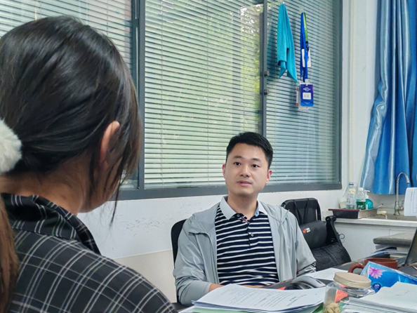
Event Description
The team interviewed Associate Professor Cai on engineered strain environmental adaptability and remediation process feasibility. Professor Cai's research encompasses aerobic granular sludge and algae-bacteria symbiotic systems, with feedback focusing on engineering implementation.
Professor Cai noted that exogenous functional bacteria face competition from native microbial communities in real wastewater environments. They may enhance treatment effects in the short term but struggle to maintain dominance long-term. Microbial treatment must consider ecological niche and signaling molecule regulation, factors that directly affect metabolic activity and treatment efficiency. Calcium alginate microsphere encapsulation is a viable direction, but long-term colonization and functional durability data are needed.
Whole-cell biosensors must be validated in real wastewater (containing high salinity, byproducts, and other complex components) for specificity and adaptability. Degradation byproduct toxicity must be monitored to avoid secondary pollution. Biosafety risk management for genetically modified organisms should incorporate protective measures at the design stage to prevent environmental dispersal.
Professor Cai also shared insights from Japan's water environment governance experience: full-chain control of hazardous substances with sensitive sensors installed at discharge points for real-time monitoring; use of natural material treatment technologies and source interception strategies for pollutant emission control; and strict safety training and examination systems to ensure standardized handling of hazardous waste by laboratory personnel.
Implications for Our Project
Professor Cai validated the rational direction of calcium alginate microsphere encapsulation and clarified the focus of subsequent technical validation: supplementing long-term colonization and functional durability data. Microsphere encapsulation is the core technical form enabling closed-loop application of engineered strains and a prerequisite for the qualitative assessment tool established in the product iteration.
The recommendation for real wastewater validation has been incorporated into the experimental protocol. Multiple actual industrial wastewater and surface water samples will be collected to test the degree of fluorescence response shift, providing data support for determining high/low contamination judgment thresholds. The reminder regarding byproduct toxicity has been incorporated into degradation experiment testing indicators. The recommendation for upfront safety protection has been reflected in the autolysis module design phase.
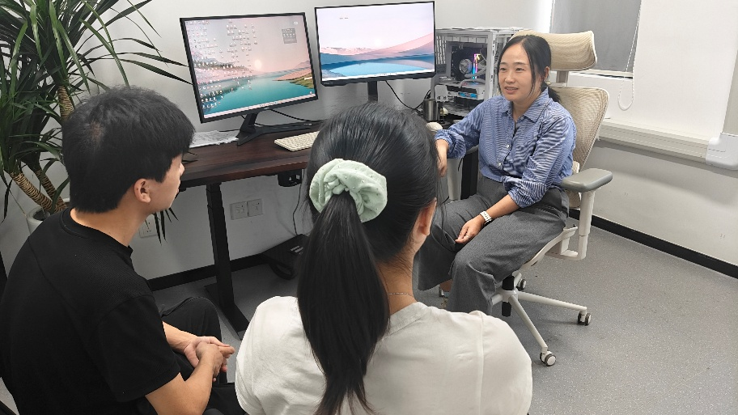
Event Description
The team interviewed Professor Yu on the technical roadmap and product positioning of the detection-degradation integrated system. Professor Yu provided the following recommendations.
Whole-cell biosensors have inherent limits in absolute accuracy, but their ultra-low detection limits make them sufficiently capable for front-end qualitative screening tasks. The product's value lies not in replacing standard methods, but in providing low-cost preliminary screening for large sample volumes.
The project's core competitive advantage lies in the integration of detection and degradation. The vast majority of current biosensors only have detection functionality, whereas this system can convert toxic naphthalene into non-toxic salicylic acid, achieving source-level remediation.
Given the difficulty of degrading high-ring PAHs, degradation experiments can begin with naphthalene derivatives (methylnaphthalene, chloronaphthalene), gradually expanding the substrate spectrum and building a foundation for future progression to more complex PAHs.
Implications for Our Project
Professor Yu's assessment that accuracy is limited but qualitative screening is feasible supports the product positioning iteration, helping the team confirm that qualitative assessment is a more pragmatic product direction than precise quantification.
The view that integrated detection-degradation design is the core competitive advantage provides a clear narrative for external communication. The recommendation for naphthalene derivative substrate spectrum expansion has been incorporated into the subsequent experimental plan.
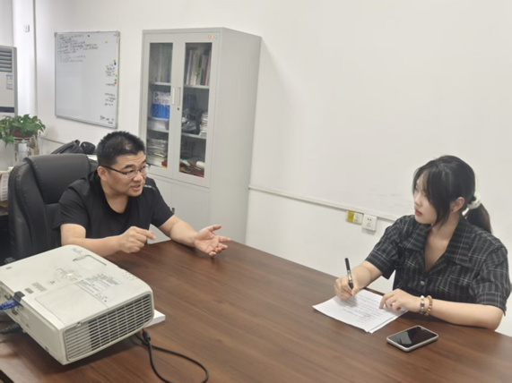
Event Description
The team interviewed Professor Zhang on the science communication system for the education component. Professor Zhang's guidance focused on the objectives, content, and evaluation criteria of science outreach.
The core function of science outreach is not knowledge transfer, but improving public scientific literacy. Science outreach should serve the cultivation of four scientific spirits: empiricism, rationality, innovation, and critical thinking. Conceptually, the broad "education model" should be converged into a practical "science outreach toolkit" with clearly defined target audiences and application scenarios. Content design must ensure scientific accuracy, follow the principle of tailoring to different audiences, and may incorporate scientific history, everyday hot topics, and cutting-edge research findings to increase appeal. The outreach theme is recommended to expand from naphthalene alone to the broader category of PAHs.
Science outreach must achieve measurable improvements in public scientific literacy. An outreach effectiveness evaluation system should be established, honestly recording all feedback including negative and ineffective results, and using objective analysis of causes to improve work — exemplifying the scientific spirit of empiricism.
Implications for Our Project
Professor Zhang prompted the team to shift science outreach from an activity-count orientation toward measurable public scientific literacy improvement. The concept of a "science outreach toolkit" clarified target audiences and reusability.
The requirement to establish an outreach effectiveness evaluation system has been incorporated into the subsequent work plan. A concise assessment questionnaire will be designed and distributed before and after outreach activities, honestly recording positive, ineffective, and negative data.
Summary of Stakeholder Engagement Outcomes
Through multi-stakeholder dialogue involving the public, enterprises, regulators, and academic experts, the NapRemSen project achieved the following iterations across three dimensions: technological design, product positioning, and science communication.
Product positioning iteration: from integrated in-situ detection and degradation tool, to precise quantitative screening tool, and ultimately to a qualitative high/low contamination assessment tool based on fluorescence thresholds — applicable to both pre-remediation screening of high-risk areas and post-remediation effectiveness validation.
Experimental protocol optimization: field sampling scheme optimized with differentiated land use types and additional atmospheric deposition sampling points; real water sample validation and long-term stability testing of microsphere encapsulation; naphthalene derivative substrate spectrum expansion plan and salicylic acid resource recovery exploration pathway.
Science communication standards established: a tiered science communication system with measurable scientific literacy improvement as the objective; an outreach effectiveness evaluation mechanism established with honest recording of all feedback.
Remaining challenges: stability of the autolysis circuit under complex real-world environmental conditions requires further verification; complete cost comparison data against traditional detection methods remains insufficient; fluorescence threshold-based qualitative judgment standards require calibration across multiple types of real water samples. These constitute the priority directions for subsequent work.
All of the above challenges originate from real-world feedback obtained through questionnaire surveys, on-site visits, and expert interviews. They are not the terminus of this project's development, but rather clarify the direction for sustainable optimization. Based on these findings, in subsequent project advancement, we will systematically translate feedback from each exchange into technical improvements, experimental design adjustments, and application strategy refinements, ensuring that NapRemSen achieves true balance among technical feasibility, economic rationality, and social responsibility.
References
- von Schomberg R. A vision of responsible research and innovation [M]// Owen R, Bessant J, Heintz M. Responsible Innovation: Managing the Responsible Emergence of Science and Innovation in Society. Chichester: John Wiley & Sons, 2013: 51-74.
- Stilgoe J, Owen R, Macnaghten P. Developing a framework for responsible innovation [J]. Research Policy, 2013, 42(9): 1568-1580.
- Sun Y J, Zhang X H, Zhang D Y, et al. New naphthalene whole-cell bioreporter for measuring and assessing naphthalene in polycyclic aromatic hydrocarbons contaminated site [J]. Chemosphere, 2017, 186: 510-518.
- Zeng N, Wu Y, Chen W, et al. Whole-cell microbial bioreporter for soil contaminants detection [J]. Frontiers in Bioengineering and Biotechnology, 2021, 9: 622994.
- Li S Y, Lyu F J, Zhao G Y, et al. Research progress in microbial whole-cell biosensors for the detection of aromatic compounds [J]. Chinese Journal of Biotechnology, 2024. (in Chinese)
- GB 36600-2018. Soil Environmental Quality — Risk Control Standard for Soil Contamination of Development Land (Trial). Ministry of Ecology and Environment, State Administration for Market Regulation. (in Chinese)
- GB 15618-2018. Soil Environmental Quality — Risk Control Standard for Soil Contamination of Agricultural Land (Trial). Ministry of Ecology and Environment, State Administration for Market Regulation. (in Chinese)
- Action Plan for New Pollutants Control (General Office of the State Council Document No. 15, 2022). (in Chinese)
- Priority Control Chemicals Catalog (First Batch) (Ministry of Environmental Protection Announcement No. 83, 2017). Ministry of Environmental Protection. (in Chinese)
- Stockholm Convention Persistent Organic Pollutants Review Committee. POPs Review List.
- Liu Y Y, Wang L, Jia X Q. Research progress on degradation of polycyclic aromatic hydrocarbons by mixed microbial systems [J]. Chinese Journal of Biotechnology, 2025, 41(5): 1843-1860. (in Chinese)
- Chen J, Luan T G, Luo L J. Research progress on bacterial degradation of alkylated polycyclic aromatic hydrocarbons [J]. Environmental Chemistry, 2023. (in Chinese)
- Zeng J, Wu Y C, Lin X G. Research progress on microbial remediation of PAH-contaminated soils [J]. Acta Pedologica Sinica. (in Chinese)
- Salicylate or Phthalate: The Main Intermediates in the Bacterial Degradation of Naphthalene [J]. Processes, 2021, 9(11): 1862.
- Grund E, Denecke B, Eichenlaub R. Naphthalene degradation via salicylate and gentisate by Rhodococcus sp. strain B4 [J]. Applied and Environmental Microbiology, 1992, 58(6): 1874-1877.
- Guo J, Xu Y Z. The logic, path and effect of public participation in environmental governance [J]. Resources Science, 2020, 42(7). (in Chinese)